PTD2001 port center mount
Chain-side bearing, full chain pull. From a 479 g solid part to a 276 g machinable trace.
25 iterationsNow 275.7 g
Every iteration of the four VU18 differential mounts and the side studies around them, from the first topology runs to traced, machinable CAD, in the order they happened.
PreliminaryLoads come from hand calculations with a 1.5 factor and are not yet measured. Results are unvalidated and clearances unchecked, so none of these are final design values.
Pass markMounts are 7075-T6. A part passes when its peak von Mises stress stays under 164 MPa, the fatigue mark at the design loads. Fatigue FoS is 164 divided by the peak.
Mass and loadsTopology masses are the material the optimizer kept; traced CAD masses are the solid part as drawn. “36T” and “34T” name the rear sprocket the loads were built for: the final drive changed to 34/11 on 12 Nov, which raised the sprocket-side load about 6%.
Chain-side bearing, full chain pull. From a 479 g solid part to a 276 g machinable trace.
25 iterationsNow 275.7 g
Exhaust-side bearing on a shimmed bar. From R01 failing the bolted check to a 165 g trace that passes.
22 iterationsNow 165.2 g
Full chain pull 90 mm out from the shim face. From 394 g to Randall’s 325 g R01.
24 iterationsNow 325.2 g
Exhaust-side engine mount. From 211 g to Randall’s 174 g R02, with pocketed versions in review.
20 iterationsNow 174.3 g
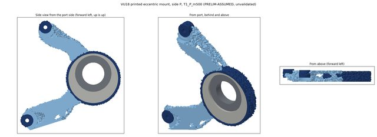
One-piece printed mount with an eccentric ring for chain tension. On hold at mass parity.
19 iterations

Load basis and pass mark, topology tool comparison, bolted-joint checks and research threads.
16 iterations
25 iterations
The port center mount carries the diff’s chain-side bearing, so it takes the full chain pull: about 11 kN at the ×1.5 design load with the 34/11 final drive. It began as last car’s 479 g solid part. A topology study gave a 299 g shape that Randall traced and refined (R01 to R03), and a redrawn blank with the bearing centred on the plate let the optimizer reach a 216 g lead with the bar bolts at ±60 mm. CHAD’s machinable trace of that lead, 276 g, passes the 34/11 bolted check.
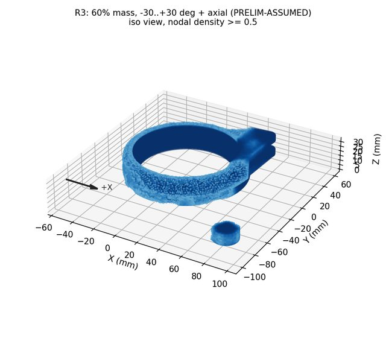
Practice round on an earlier port center mount (PTD1003) to build the simulation pipeline, with placeholder loads and no design numbers.
Before real loads existed, CHAD reproduced Randall’s original PTD1003 Workbench model with its made-up 700 N load and swapped materials to prove the scripted pipeline, then tried practice strength and topology runs at an early bearing-load estimate. Randall called these practice runs. Their main lesson was that rigidly fixed holes and a pin-and-link support give misleading answers, which shaped the support models used later.
Mass: PTD1003 R01 CAD at the Ansys default aluminium density. Stress: Placeholder loads; numbers not quoted.
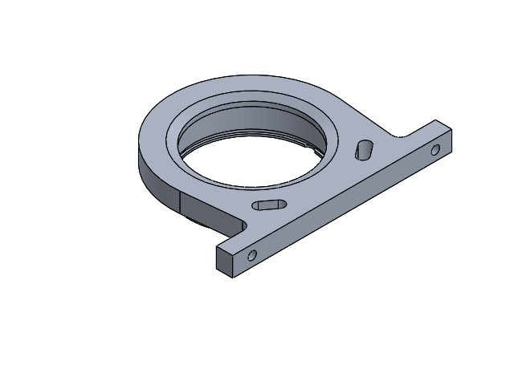
Starting point: last car’s solid sprocket-side center mount, 479 g, stressed far below the 164 MPa fatigue mark.
The VU16 part was the baseline. With its two plate slots filled it weighs 479 g. Run through the same bolted check used on the VU18 parts at the 36T loads, it read 75 MPa in the drive band and 90.5 MPa at the drive-side edge, well under the 164 MPa fatigue mark, so there was a lot of mass to take out.
Mass: solid sim version with the plate slots filled; the as-built VU16 part with slots is about 467 g. Stress: drive-side edge −30°, bolted 5 kN, mu 0.2, full-face stand-in bar (2026-11-06 benchmark); drive band 74.6. The first 26 Oct static at an early assumed 9,357 N load read 62.9 and is not on the design basis.
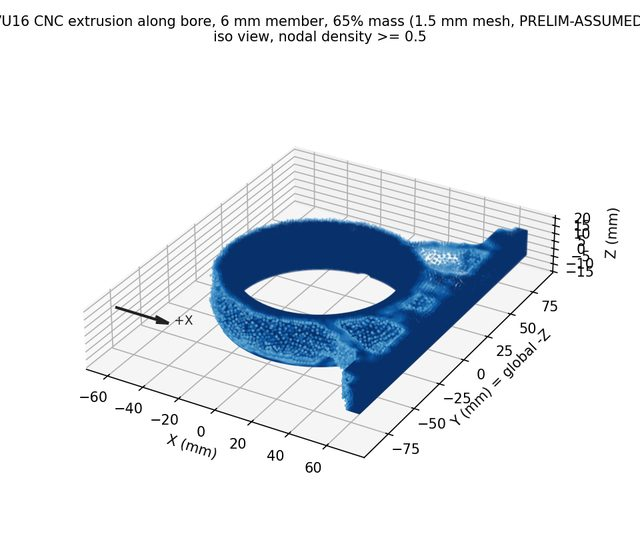
First topology result on the VU16 part: a CNC-millable profile at 65% mass keeps the ring, two short ties and two diagonal struts, about 300 g.
Topology optimization in Ansys (minimum compliance, extrusion along the bore so it can be profile-milled, 6 mm minimum member) converged at about 62% of the solid, about 299 g, with both struts to the bolt bosses solid. Going below 65% cut the struts and made the part about four times more flexible, so 65% was the knee. Rechecked at the updated loads on 27 Oct it peaked at 134 MPa in the drive band and 152 MPa at the −30° edge, and it became the shape Randall traced as R01.
Mass: topology shape (298 g by density, 303 g smoothed). Stress: drive-side edge −30°, full shim-face seat, rechecked at the VU16 loads on 27 Oct; mapped drive band 131–134.
Replaced by: R01 traced CAD, first export (311 g)
Forcing left-right symmetry gave two small mirrored windows around a centre tie; dropping to 62% cost 65% in stiffness for 12 g.
Randall asked why the small window sat off-centre, so the run was repeated with mirror symmetry about the bore. The optimizer then placed two small windows either side of a centre tie, the most direct drive-load path, at only 9% stiffness cost. A 62% run saved just 12 g more but was 65% more flexible, which confirmed 65% as the knee. Randall traced the unsymmetric 65% shape.
Mass: 65% symmetric shape; the 62% version is 287 g. Stress: not stress-checked; stiffness (compliance) comparison only.
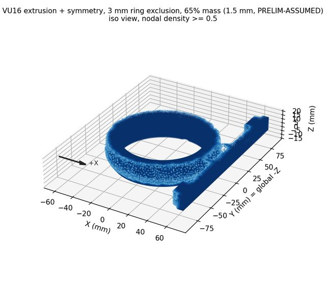
Letting the optimizer thin the ring closer to the seat cut both arms to the bolt bosses, so this direction was dropped.
With only a 3 mm keep-out round the bearing seat, the symmetric 65% run converged at about 303 g but removed both struts to the bolt bosses, leaving the ring tied to the bar only in the middle; the 60% version did not finish. The ring-wall question came back on the VU18 part, where a 5 mm wall with real arms won.
Stress: stress validation did not run; both arms cut.
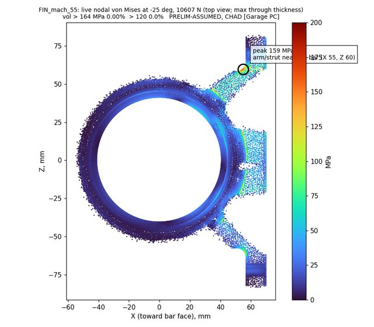
A finer-mesh run at 55% mass reached 259 g, but its thin diagonal arms bent: it failed the −30° edge and the bearing seat went out of round.
The overnight finest-mesh run (0.75/0.5 mm) tried to go lighter than the 299 g pick. It passed the mapped drive band only marginally, failed at the sweep edges, and its bearing seat ovalized 0.63 to 1.49 mm, seven times the pick’s. The post-mortem blamed the thin arms bending into the bolt bosses, not the ring, and that became a design rule; a 60% version (290 g) passed on stress but still ovalized too much.
Stress: drive-side edge −30° (bolt-pad seat); the full-load +30° step read 255 but is envelope only.
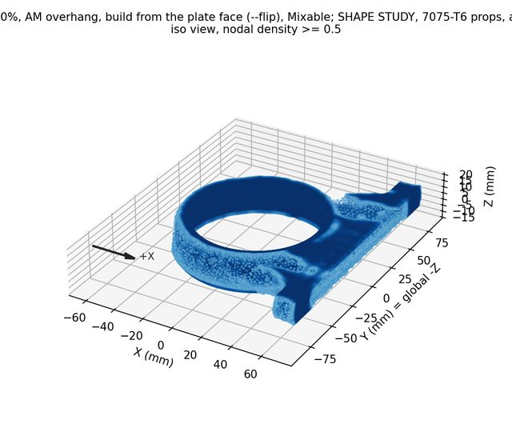
A 3D-printing shape study at about the same mass ran at half the stress, but printing stayed a comparison, not the plan.
Without the extrusion rule (45° overhang rule instead, built from the plate face) the optimizer filled the plate between ring and bar with a web, reaching 302 g at 61–67 MPa in the drive band with seat ovalization under 0.17 mm. It was logged as the printed candidate, 3 g heavier than the machined pick at half its stress, but the team machines its mounts, so it was not pursued.
Mass: kept mass (topology 285 g); 7075 properties, shape study only. Stress: mapped drive band, live nodal (element max 82–86).
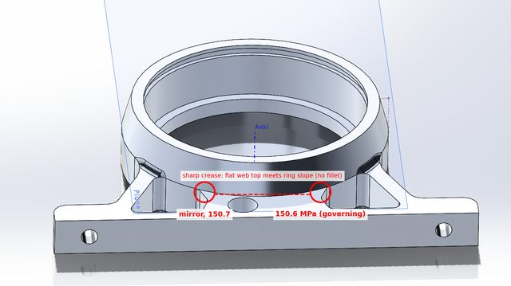
+1Randall traced the 299 g topology shape into SolidWorks as PTD2001 R01; it passed, but its peak sat on a sharp, unfilleted crease.
First check of the traced VU18 part: 311 g and 150.6 MPa worst case. The peak sat on a sharp edge where the flat web top meets the sloped ring, so the number kept rising with mesh refinement; CHAD marked the spot on Randall’s screenshot and recommended a fillet there. The ring wall above the plate was also thinner than the 8 mm rule in force at the time.
Stress: drive −19° + 150 N onto the circlip, bolt-pad seat, 0.75 mm mesh; on a sharp unfilleted edge, mesh-dependent.
Replaced by: R01 re-exports: fillets, rim round, 12 mm hole moved (302 g)
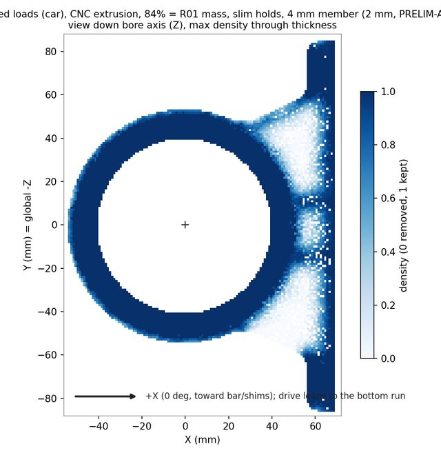
+1Re-running topology on Randall’s solid R00 blank with the real chain-load directions dropped the diagonal arms, and the result failed badly.
Randall’s R00 blank (359 g, solid from ring to bar) was optimized for the mapped drive and braking directions at R01’s mass. The minimum-compliance shape linked ring and bar only through short central struts; validated, it read 270 MPa in the drive band and 295 at the drive edge, with the seat ovalizing up to 0.55 mm. The lesson: minimum compliance is not minimum peak stress, and the hand-traced R01 stayed the design.
Mass: kept at the 0.5 density cut; blank 359 g. Stress: drive-side edge −30°, full shim-face seat; drive band 270.
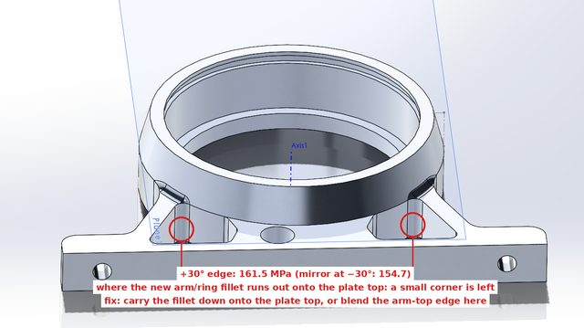
Quick R01 re-exports: crease fillets removed the first hot spot, a full rim round made things worse, and moving the 12 mm hole helped.
Over 1–2 Nov Randall re-exported R01 several times and each export was checked the same day. Crease fillets and a 70 mm bore-to-bar distance gave 302 g; a version with a full rim round at the arm-to-ring corners failed the −30° edge (165–176 MPa) and was reverted. The export without the rim round and with the 12 mm hole on the braking side passed at 147 MPa in the drive band and 159.5 MPa at the drive edge (2.7% margin). Up/down for these runs was corrected on 7 Nov: they leaned the drive load the wrong way, so their numbers describe the mirror image of R01 as drawn.
Stress: drive-side edge −30°, linear, full shim-face seat, 0.75 mm; drive band 147.4.
Replaced by: R01.1: braking arm slimmed to 4 mm (298.4 g)
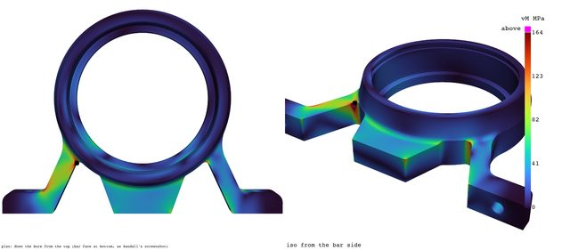
Cutting the flange strip into three pads saved 5 g but turned the arms into cantilevers; R02 failed by a wide margin.
R02 dropped the 12 mm hole, widened the centre web and let the pockets break through the flange, so the shim face became three pads. Without the closed frame through the flange strip each arm bent as a cantilever: 226 MPa in the drive band, 250 at the drive edge and 0.21 mm seat ovalization. The idea was dropped because 5 g did not pay for it.
Stress: drive-side edge −30°, linear, full shim-face seat, 0.75 mm; drive band 225.8.
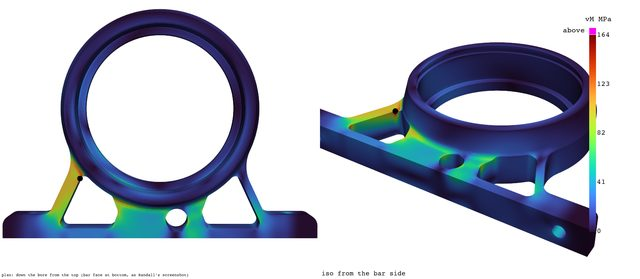
A slimming study showed the lightly loaded braking arm could lose 3 mm; Randall cut it in CAD as R01.1, which behaved as predicted.
A topology run with R01 as the domain and the ring frozen collapsed (it thinned both arms and the web together), so the next step was targeted: the half-load braking arm was cut 1, 2 and 3 mm narrower by script and re-checked. All passed, so Randall made R01.1 with that arm at 4 mm (−3.9 g). It read 143.6 MPa in the drive band and 155.2 at the drive edge, within 1–3 MPa of the study.
Stress: drive-side edge −30°, linear, full shim-face seat, 0.75 mm; drive band 143.6.
Replaced by: R01.2: bigger drive-corner fillet (298.9 g), later found wrong-handed
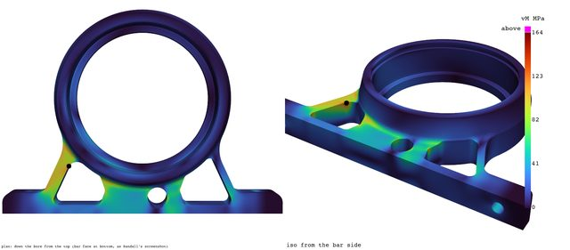
+1Enlarging one window fillet bought 18 MPa for 0.6 g, but a later check showed R01.2 as drawn was the mirror image of the part that fits the car.
R01.2 changed only the drive-arm window corner from R3.2 to R6.4 mm. On 2 Nov it read 131/137 MPa linear and 137/159 MPa in a bolted model with pretension and shim friction, and was the design to take forward. On 7 Nov the up/down check showed those runs had leaned the drive load the wrong way: installed as drawn, the 12 mm hole and thin arm end up at the bottom and the part reads 190 MPa in the drive band and 219 at the drive edge. The mirrored part read 147.5 / 165.0, which led to R03.
Stress: drive edge −30° + 150 N, bolted 5 kN, installed as drawn (corrected 7 Nov); drive band 189.5.
Replaced by: R03 (mirrored R01.2), 298.9 g
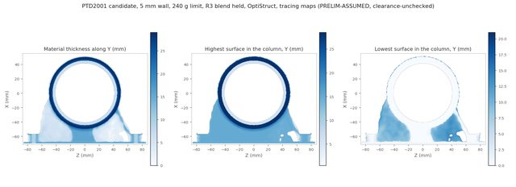
+1Once a bearing study allowed more seat tilt, OptiStruct on a 5 mm ring wall reached 239 g, 60 g under R01.2.
A bearing-life check showed fatigue does not limit the bearings over the car’s roughly 600-mile life, so more seat tilt was allowed and the mount was re-optimized in Altair OptiStruct, with bolted checks in Ansys. At equal mass a 5 mm ring wall beat 8.5 mm because the freed mass stiffened the arms (the best 8.5 mm shape was 289 g and worse on braking), and Randall adopted the 5 mm wall. The 240 g rung read 120/149 MPa on drive and 151 at the braking edge on the 1 mm mesh, but a braking-side pocket corner went over the mark on a finer mesh, left for traced CAD to settle. Its maps are drawn in the run’s orientation and are traced mirrored.
Stress: braking edge +30° at 5,303 N, bolted 5 kN, nominal 1 mm mesh; a braking-side pocket corner read 192 on a 0.5 mm mesh (not converged).
Replaced by: R04 ±60 220 g discrete lead (216 g)
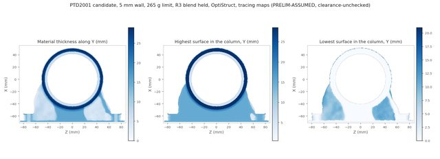
A heavier 264 g alternate, full depth at both hole sites, that beat or tied R01.2 on almost every measure.
Kept beside the lead in case the thin web of the 239 g shape proved a problem: 103/128 MPa on drive and 114/140 on braking at the 1 mm mesh, with less seat tilt than R01.2. Like the lead, its braking-side pocket corner read over 164 MPa on a finer mesh. Both were set aside when the centred R04.0 blank arrived.
Stress: braking edge +30° at 5,303 N, bolted 5 kN, nominal 1 mm; 171 on a 0.5 mm mesh at the same pocket corner.

Rendering R01.2 in the car’s frame showed it was drawn as a mirror image; Randall confirmed the mirrored version and exported R03.
Randall’s facts (hub facing left seen from behind, shim face toward the engine, 12 mm hole and thin arm on top) could not all hold for R01.2 in a right-handed frame. Three renders from the car’s left side showed his screenshot, R01.2 as drawn with the hole below the centreline, and the top-to-bottom mirror with the hole above; Randall picked the third. It also meant earlier PTD2001 runs had leaned the drive load the wrong way, so their numbers apply to the mirrored part. Since then every new CAD gets an up/down check from the solved bore motion before its first run.
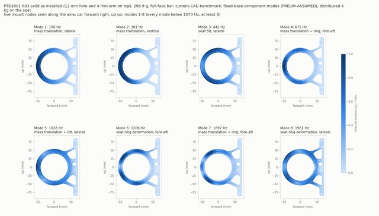
R03 is R01.2 mirrored to fit the car: 299 g (−38% vs the solid), passing the bolted check by 1 MPa, then just over on a finer mesh.
Bolted as installed with up/down verified from the bore motion: 146 MPa in the drive band and 162.9 at the drive edge on the 1 mm mesh, braking 109/131. On a 0.75 mm mesh the drive edge read 167.0 at a fillet run-out by the lower bolt pocket, a marginal fail on linear peaks; swapping its two ring-window fillets did not help. Scaled to the later 34T loads the edge would be about 170 MPa. R03 stays the fallback CAD; the centred R04 blank replaced it as the design direction.
Stress: drive edge −30° + 150 N, bolted 5 kN, 0.75 mm mesh (162.9 at 1 mm); drive band 146–149.
Replaced by: R04 ±60 220 g discrete lead (216 g)
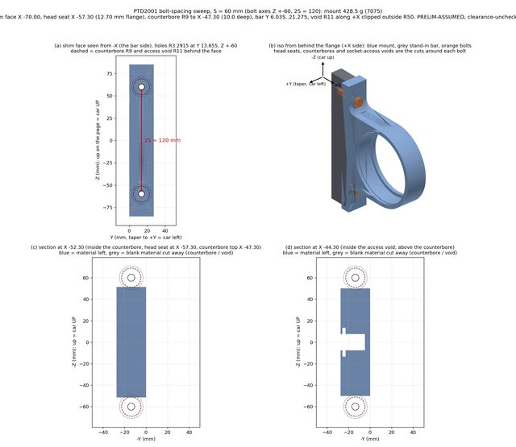
Randall’s new blank centres the bearing seat on a thicker 27.3 mm plate with a 5 mm ring wall, so the chain load no longer bends the plate off-centre.
Earlier mounts carried the bearing off the plate’s mid-plane, which adds bending. Randall drew R04.0 with the seat centred on a 27.3 mm plate, a 5 mm ring wall, a solid arm block and a long shim face, and left out the bar-bolt holes so CHAD could cut them at several spacings. It is the design space for every R04 run and the stock outline for the machinable trace.
Mass: blank as received, no bolt holes (428.5 g with holes at ±60).
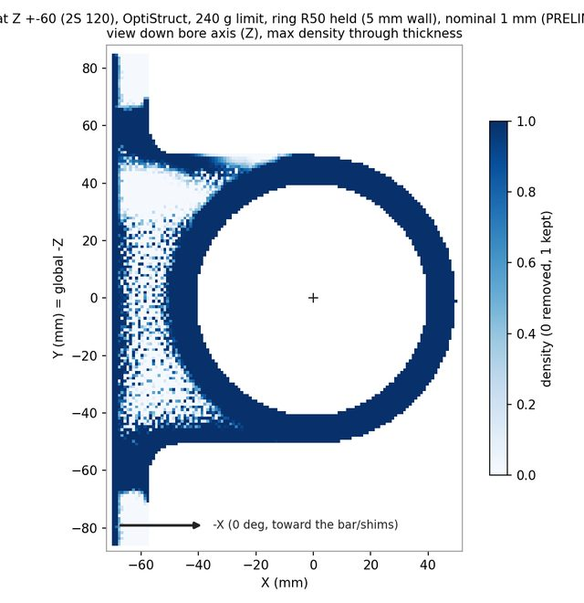
Cutting the bolt holes at six spacings from ±40 to ±71 mm showed that centring removed the offset bending; ±60 mm came out best.
At 240 g every spacing from ±55 to ±71 passed with wide margin and seat ovalization roughly halved against R03, while spacings tighter than ±50 climbed quickly. Refining around ±60 showed mass is the lever and the braking-side edge sets it (155 MPa at 200 g, 130 at 210 g, 115 at 220 g). Part of the continuous-density web was speckled, porous material a machined part would not have, so discrete reruns followed.
Mass: ±60 rung at the 240 g limit (kept). Stress: ±60 at 240 g, braking edge +30° (drive 64, drive edge 66, braking 61).
Replaced by: R04 ±60 220 g discrete lead (216 g)
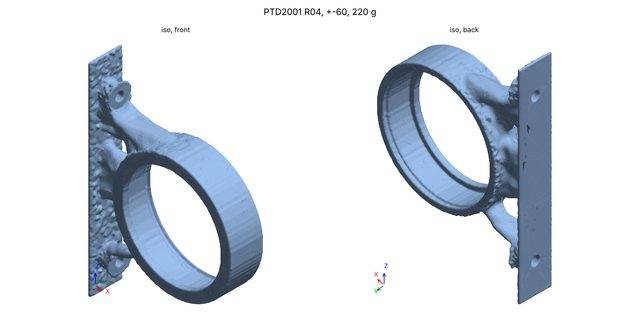
+1The topology lead: bolts at ±60 mm on the bearing plane and a clean solid-or-empty shape at 216 g that passes every bolted step with margin.
Re-run with OptiStruct’s discrete setting so the web is either solid or empty, the 220 g rung read 69.5 / 112.6 / 81.9 / 123.3 MPa (drive / drive edge / braking / braking edge); 200 g failed at the braking edge (180 MPa) once the lattice fill was gone. Its members are the ring, a thick drive-side arm band, a diagonal to the opposite flange end, a central web and the shim strip. Smoothed STLs went to Randall for tracing on 8–9 Nov. It is 83 g lighter than R03 and 263 g under the VU16 solid.
Mass: kept mass at the 220 g limit, solid-or-empty (discrete) shape. Stress: braking edge +30° at 5,303 N, bolted 5 kN; drive band 69.5, drive edge 112.6, braking 81.9.
Moving the bolts to ±54 mm for engine-mount washer room cost nothing; in the end the pair stayed at ±60.
The sprocket-side engine mount needed washer room at its bolts, so the 220 g run was repeated with holes at ±54 (and ±56): 73.6 / 101.3 / 84.3 / 119.2 MPa, as good as ±60. One discrete ±56 run read far higher on braking; a continuous rerun read 116 MPa, showing it was an artefact of that shape. The engine mount was later drawn with a smaller hardened washer at ±60, so PTD2001 kept ±60.
Stress: braking edge +30° at 5,303 N, bolted 5 kN; drive 73.6, drive edge 101.3, braking 84.3.
When the final drive changed to 34/11 the chain pull rose about 5%; the 220 g lead still passed every bolted step, worst 129 MPa.
A smaller rear sprocket raises the grip-limited chain pull, so the bearing load went from 10,607 N to 11,100 N at x1.5. The bolted check was re-run on the lead at the new load: 71.8 / 117.5 / 84.7 / 128.7 MPa, a fatigue factor of safety of 1.27, net ovalization at most 0.15 mm, with orientation confirmed from the bore motion. By scaling, R03 would go over 164 MPa at its drive edge, so the R04 lead is the one that holds.
Stress: braking edge +30° at 5,549 N, bolted 5 kN; drive band 71.8, drive edge −30° 117.5, braking 84.7.
 +2
+2Presentation slides for the lead: what the optimizer could change, what was frozen, supports, the load fan, and the mass ladder.
Made for Randall’s design presentation without re-solving. The setup slide shows the R04.0 design space, about 158 g of frozen ring, skin and bolt bosses, the stand-in bar support and the drive and braking load fans; the ladder slide plots worst peak against kept mass for each rung with the 164 MPa line, the discrete 196 g rung failing, the 216 g lead passing, and its 34T recheck.
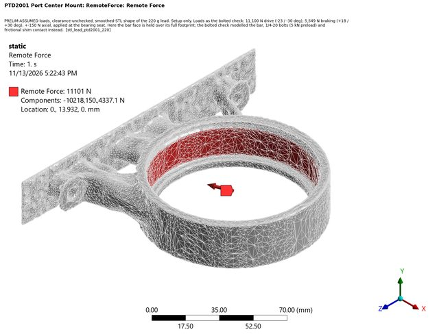
Ansys setup views of the lead for the slides; stress pictures were withheld because the smoothed shape didn’t reproduce the bolted check.
To get presentation pictures, the smoothed lead shape was meshed and loaded like the 34T bolted check but held over its whole shim face. That model read far higher stress and deflection than the bolted check of the optimizer’s own shape (117–129 MPa), most likely because smoothing turns the speckled web into thin necks. So only the setup views were used, and stress pictures waited for a traced CAD part.
Stress: stress pictures withheld: the smoothed-shape model did not reproduce the bolted check.
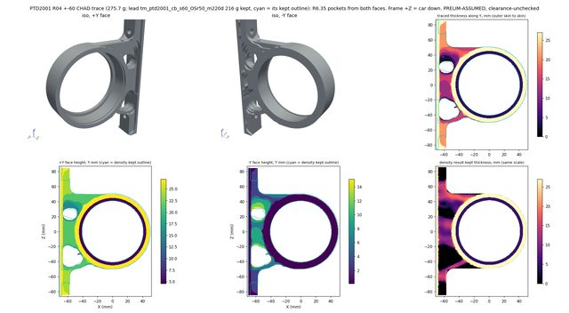
+1A machinable version of the lead: flat-floor pockets with 1/4 in corner radii, 276 g, passing the 34T bolted check with 34% margin.
Randall was behind on tracing, so he asked CHAD to build SolidWorks-ready parts. CHAD cut 2.5D pockets (straight lines and tangent arcs, R6.35 inside corners, floors and walls at least 3 mm, one depth per pocket, from both faces) into the R04.0 blank from the optimizer’s own densities, and delivered a STEP, DXFs and a pocket table. The milling rules fill the lead’s thin membranes, so it is 60 g heavier than the 216 g shape, but stiffer (0.18 vs 0.23 mm) and reads 81 / 108 / 68 / 94 MPa; the peak moved to the edge of a bolt-head pocket on the blank. An earlier smoothing rule had cut through a diagonal member and was fixed before this version. Clearance is still unchecked.
Mass: solid CAD; 27.31 mm plate machined from 1–1/8 in stock. Stress: drive edge −30° + 150 N, bolted 5 kN at 11,100 N; drive 81.1, braking 67.5, braking edge 94.4.
No iterations of this part match the filters.
Not pictured: the 239 g and 264 g optimizer leads, which were never traced; stress plots of the 220 g lead at 34/11, held back after the smoothed shape failed to match the bolted model
22 iterations
The starboard center mount carries the diff’s exhaust-side bearing and bolts to a mounting bar through shims, with the chain pull trying to lift it off them. Randall’s first VU18 design, R01 at 144 g, passed a simple check but failed the more realistic bolted one, which led to hand stiffening studies and then topology optimization on a larger design space. That work settled on a 114 g lead with the bar bolts moved inboard to clear the engine, then a 130 g version with grooves wide enough to machine; CHAD’s machinable trace of it, 165 g, passes the bolted check.
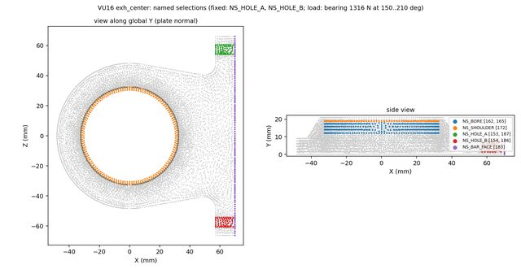
The solid VU16 mount that ran on the car: 228.8 g of 7075, the starting point for the lighter VU18 part.
The previous car’s exhaust-side center mount was a solid block that never failed in service. Its geometry was set up as the reference for the VU18 work, with the bore, bearing shoulder, bolt holes and bar face picked out as load and support regions.
Stress: first static used an early 1,316 N load estimate, not a design number; bolted check at 36T loads is in the VU16 tilt benchmark entry.
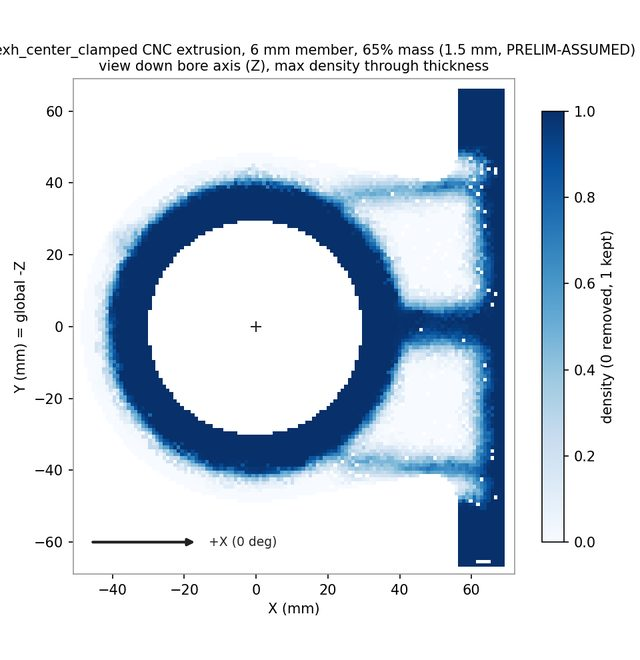
+1First topology runs on the VU16 mount: the 65% shape kept a ring, a centre tie and two arms at 139 g.
A machinable (extrusion-constrained) topology run on the old mount, with the bar face clamped, kept a ring, a centre tie and two arms to the bar at 139.4 g. The 60% run (130.3 g) left the ring hanging on a thin centre tie, so it was not viable, and a later recheck could not settle the stress because different stress measures disagreed by 2–4x.
Stress: clamped bar face, ±300 N axial; stress measures disagreed 2–4x on recheck, so no design number.
Replaced by: PTD2002 R01
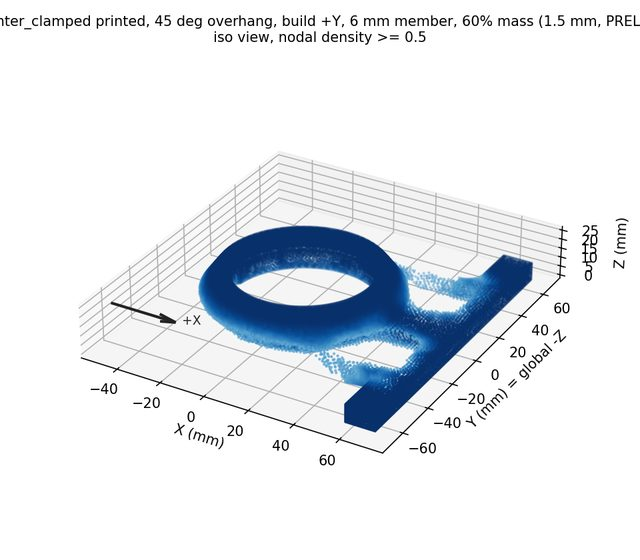
A 3D-printing version of the topology run at 138 g carried about half the stress of the machinable shape.
The same study rerun with a 45-degree overhang rule for printing kept 138 g and showed roughly half the stress of the machinable pick in the clamped model. The 50% printed run broke its load path, and printing was not carried forward for this part.
Stress: clamped model, nodal 104–140 MPa, about half the machinable pick’s stress; not a bolted design number.
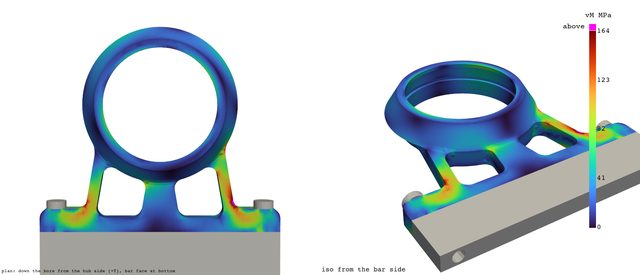
+1Randall’s first VU18 design at 144 g passed a simple check but failed the bolted check at about 200 MPa.
R01 has a ring, two angled arms and a centre web, close in look to the VU16 topology shape. A simple linear check with a fixed bar face read 133.5 MPa, but the bolted model, which lets the mount lift off its shims, read 199.5 MPa at the arm-to-flange corners and showed the bearing seat tilting 0.81 mm along the bore.
Stress: bolted 5 kN, drive 203° + 150 N axial; 199.0 at the 210° drive edge; same at 12.7 kN preload.
Replaced by: 113.7 g topology lead, bolts at ±47.4
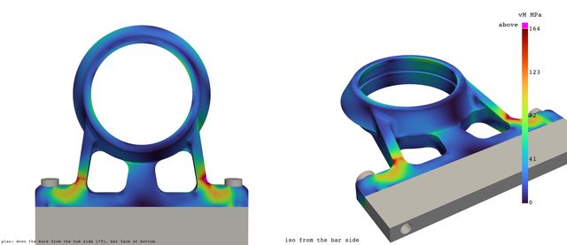
Adding a rib to each arm made things worse: 149.5 g and 261 MPa in the bolted check.
R02 added a rib along each arm that stopped 4 mm short of the flange. Stiffening the arm tip pushed the bending into the short unribbed root, so the peak rose to 261 MPa, worse than R01.
Stress: bolted 5 kN, 210° drive edge; 260.2 at drive 203°.
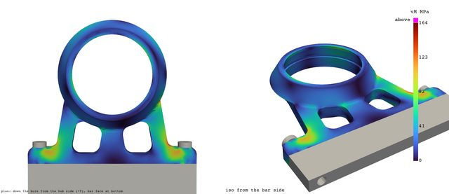
+1Hand edits to R01 showed the arm-root fillet matters more than arm width; 12 mm arms with an R6.75 fillet passed at 139 MPa for 156.5 g.
Variants widened the arms, changed the root fillets, added full blocks and removed the ring taper. Twelve-millimetre arms with an R6.75 outer fillet passed at 139 MPa for 156.5 g and square arms with large R11.25 fillets read 130 MPa at 160.1 g, while solid blocks that cut seat tilt cost 47–57 g.
Mass: variant (f), solid CAD. Stress: variant (f), bolted 5 kN, drive 203°; 137.7 at the 210° edge.
Replaced by: A50, first topology lead (blank A, 50%)
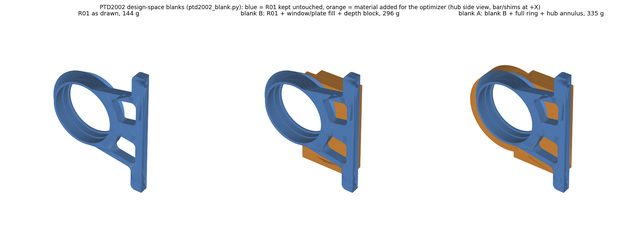
+1Before topology, the bolted support was calibrated and two oversized design-space blanks were built around R01.
Small bonded pads around each bolt on the stand-in bar read 4–8% below the full bolted model, so topology runs could use the cheaper support. Blank A (335 g) filled R01 out to a full ring and hub annulus, and blank B (296 g) was a smaller fill.
Mass: blank A design space (blank B 296 g).
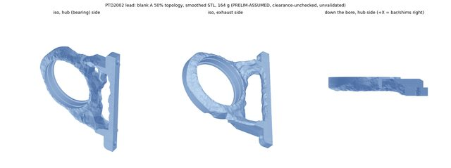
+1The first topology lead kept 164 g of blank A and passed the bolted check with 15% margin.
Ansys topology at 50% of blank A kept 163.8 g and passed at 139 MPa, with the bearing seat moving 0.46 mm. The 40% rung cut through the arms, blank B was marginal at 55% (158 g, 164 MPa) and failed at 50%, and a stress-constrained run left grey, undecided arms.
Stress: bolted 5 kN, 210° drive edge; 134.6 at drive 203°, braking 89/92.
Replaced by: A46 (blank A, 46%)
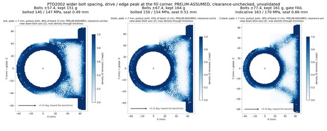
Moving the bar bolts further apart did not help: the bolts sit on the tilt axis, so wider spacing adds no leverage.
Randall asked whether spreading the bar bolts would lighten the part. At ±67.4 mm the 164 g shape read 154 MPa, worse than 147 MPa for a 151 g shape at the original spacing, and ±77.4 failed the mass gate, although the arms did run diagonally to the wider bolts when given room.
Stress: bolts at ±67.4, 210° drive edge; 150.1 at drive 203°.
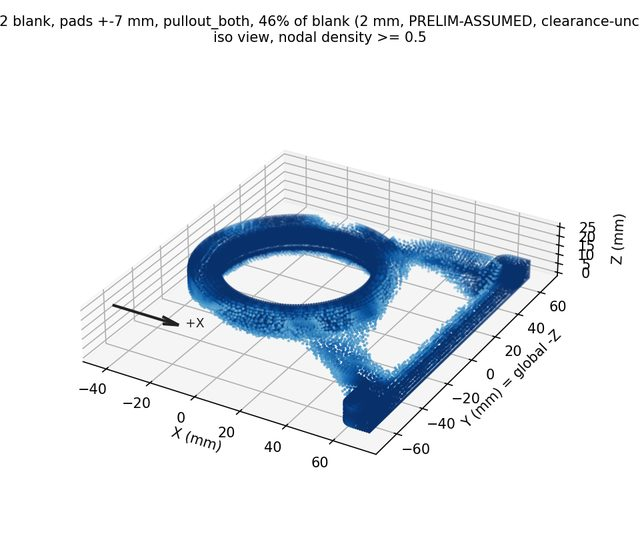
A 151 g Ansys topology shape passed with 10% margin and was the recommended lead at the time.
Pushing blank A to 46% kept 150.9 g, read 147 MPa in the bolted check and moved the seat 0.49 mm. It was the trace candidate until the OptiStruct runs found lighter shapes.
Stress: bolted 5 kN, 210° drive edge; 140.2 at drive 203°.
Replaced by: Ring held, 133 g OptiStruct lead

Altair OptiStruct matched Ansys within 2.5% and found lighter shapes, but these first runs had left the ring unprotected.
The OptiStruct model matched the Ansys static within 2.5%, and its 153.5 g run read 130 MPa where Ansys needed 151 g for 147. Lighter 132 g and 117 g shapes looked promising until a check the same day found the ring below the bearing groove had not been held, so the optimizer had thinned it and they were not usable parts.
Mass: kept mass of the 132 g rung; not a usable part. Stress: 132 g rung, 210° drive edge, 1 mm mesh; not a valid result because the bearing ring was not held.
Replaced by: Ring held, 133 g OptiStruct lead
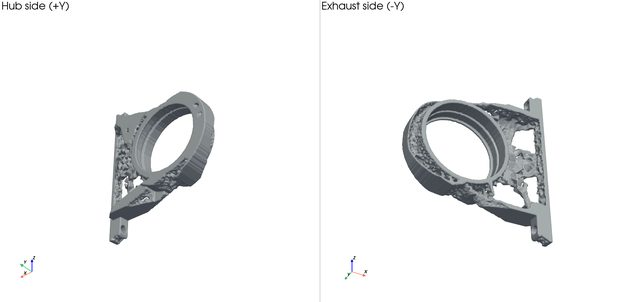
+1With the full ring held, OptiStruct kept 132.6 g and passed at 151 MPa; the 117 g rung failed.
Holding the ring to its full depth gave a 132.6 g shape at 147/151 MPa, while the 117 g rung failed at 166. A finer mesh read much higher at the blank’s sharp corners, which led to a new blank with R3 fillets; seat tilt was the same on both meshes.
Stress: 210° drive edge, 1 mm mesh; a 0.5 mm mesh read 184/189 at the blank’s sharp corners, 153/161 with R3 fillets.
Replaced by: 113 g lead (more tilt allowed)
With the same setup, OptiStruct matched Ansys’s stress about 37 g lighter and in minutes instead of up to 70.
Ansys needed 170 g to reach 151 MPa where OptiStruct kept 133 g at 151 MPa, and Inspire’s 133 g shape read 145 MPa. The team chose OptiStruct for topology and kept Ansys for the bolted checks, noting that OptiStruct shapes had up to twice as many undercuts.
The old solid mount, run through the same bolted check, read 126 MPa with about 30 arcmin of seat tilt.
Run through the same bolted check, the VU16 mount tilted its bearing seat about 30 arcmin, against 50.8 for R01 and 24.7 for the 133 g lead. Bearing-life numbers showed tilt does not limit fatigue over the car’s 600-mile life, so Randall allowed more tilt in later runs.
Mass: solid 7075 (VU16 part). Stress: VU16 mount, bolted 5 kN, drive 203°; 125.3 at the 210° edge.
Allowing more seat tilt let OptiStruct drop to 112.9 g while still passing at 137–148 MPa.
On a new blank with R3 fillets and the ring held, a 112.9 g shape read 137 MPa drive and 90 braking, with 25 arcmin of seat tilt and a chain-angle change under 0.1 degree. The 102 g and 91 g rungs failed and a 108 g rung went over the mark in one bearing-shoulder case on the finer mesh, so 113 g became the lead. A modal check of this shape found it stiffer than R01 in every direction, with no local mode below about 1,070 Hz.
Stress: 0.5 mm mesh, 210° drive edge, hub corner masked; 137/137 on the 1 mm mesh, braking 90/90.
Replaced by: 113.7 g topology lead, bolts at ±47.4
The top bolt boss nearly hit the engine, so the bar bolts moved inboard; without extra hub material that cost stress.
Randall found the top bolt boss nearly touching a cast lug on the engine, so a sweep moved the bolts about 10 mm inboard. At 115 g and without a hub build-out, ±47.4 mm passed at 158 MPa, ±42.4 failed badly at 291 and the original ±57.4 read 189, which showed the build-out is what roots the arms.
Stress: bolts at ±47.4 without build-out, drive 203°; 155 at the 210° edge.
Replaced by: 113.7 g topology lead, bolts at ±47.4
With the hub build-out back and the bolts at ±47.4, the 113.7 g lead matched the old bolt spacing at 141 MPa.
Turning the 113.7 g shape into pockets a cutter can reach added 22% or more, and a groove-limited rerun at 115 g failed.
Reading the lead as 2.5D pockets gave 139.6 g with a 1.5 mm corner radius and 174 g with a 6 mm cutter. A discrete rerun read 173 MPa at 112.7 g and a rerun with a minimum groove width at 115 g failed at 201, so the mass limit had to rise.
Mass: 2.5D pocket reading with a 1.5 mm corner radius. Stress: groove-limited rerun at 115 g, 210° drive edge (187 at drive 203°).
Replaced by: Machinable 130 g lead (grooves at least 6.5 mm)
Raising the limit to 130 g with grooves of at least 6.5 mm gave a machinable shape at the same 140 MPa as the lead.
An OptiStruct rerun with members 3–6 mm thick and gaps of at least 6.5 mm kept 129.5 g and read 138/140 MPa drive and 94/96 braking. That is the same stress as the 113.7 g lead for 16 g more, with every groove wide enough for a real cutter.
Stress: bolted 5 kN, 210° drive edge; 138.3 at drive 203°, braking 94.3/95.6.
Slides summarising the topology setup and how stress rose as mass came out, with the lead and machinable versions marked.
A full stress picture of the smoothed 130 g shape agreed with the bolted check: 143 vs 140 MPa at the drive edge.
The smoothed shape was turned into a solid and checked with the bar held on pads round each bolt, to give a clear picture for presentations. It matched the bolted check away from one sharp crease left by the smoothing, which reads a meaningless spike and would disappear with a traced fillet.
Stress: 210° drive edge, linear check on pads; one sharp STL crease (singular, 417 MPa) masked.
CHAD traced the 130 g shape into line-and-arc pockets: 165.2 g, passing the bolted check at 142 MPa. Awaiting Randall’s review.
The trace cuts 3 through windows and 20 constant-depth pockets with 6.35 mm corner radii from the two faces of the blank, keeping two thin edge ribs at full height after an earlier 149 g version without them failed at 167 MPa. It is 28% heavier than the shape it follows because large corner radii cannot follow 6.5 mm grooves; Randall has since allowed 3.175 mm corners, so a lighter re-trace is possible.
Stress: 210° drive edge, 0.75 mm mesh; 137.7 on the 1 mm mesh, drive 136.2, braking 84.6/86.3.
No iterations of this part match the filters.
Not pictured: a plain render of R02 (it appears through its stress plots); the stress-limited optimizer runs, which collapsed to 71–75 g
24 iterations
The port engine mount bolts to the engine block with two M10s and carries the port center mount on its shim face, so the full chain pull acts 90 mm out and bends it in its own plane. From the 394 g VU16 part, the work went through optimizer-only design spaces, then Randall’s hand-drawn “Fat” family with a corner brace, to a 285 g topology lead that Randall traced as R01 at 325 g. R01 passes at 158 MPa against the 164 MPa mark, and machinable pocket studies found only 4–8 g more to remove with simple tooling, so R01 stays as drawn.

Starting point: the 394 g solid VU16 port engine mount, checked before any material came off.
A 15 mm 7075 plate with two M10 bosses to the engine block and two 1/4-20 bar-bolt holes for the center mount. The first check put the load at the plate’s mid-thickness 70 mm out and read 126 MPa; with the 20 mm shim stack (90 mm arm) and the true bearing position it read 151 MPa when the load was centred and 192 MPa with the bearing 7.5 mm off the plate’s mid-plane.
Stress: drive −25° + 150 N side load with the bearing load centred on the plate; 192 MPa (fail) with the bearing 7.5 mm off the plate mid-plane.
First topology sweep on the VU16 part: every shape from 50% down to 30% of the plate failed by a wide margin.
Compliance-minimum shapes keeping 50, 40, 35 and 30% of the plate all overstressed the web next to a bar-bolt hole (263 MPa and up; the 30% shape fell apart), and a stress-limited run kept 202 g but still read 228 MPa. The fixed-mass runs used a 70 mm load arm that left out the shim stack; the stress-limited run and every later check used 90 mm.
Mass: kept mass of the 50% rung (the sweep kept 184, 145, 127 and 98 g). Stress: 50% rung, worst of the −30 to +30° drive steps with 300 N side load; peak next to a bar-bolt hole.
With the correct 90 mm load arm, keeping 90% of the solid passed at 157 MPa, but only with the bearing centred on the plate.
Keeping 90% of the plate (347 g, 47 g off) passed while 85% (327 g) read 167 MPa. A bearing-offset map the next day showed this shape needs the bearing within about 1 mm of the plate’s mid-plane (157, 171, 188, 206 MPa at 0, 2.5, 5, 7.5 mm), and a printed-style 85% variant (358 g) did no better.
Stress: drive −25° + 150 N side load, load centred on the plate; 206 MPa with the bearing 7.5 mm off-centre.
Replaced by: EMT T1 optimizer lead (339 g)
VU18 start: the VU16 plate thickened by 3 mm and optimized; 339 g was the lightest pass with the bearing centred.
CHAD built a design space (EMT T1) by thickening the VU16 web by about 3 mm on one face (394 to 458 g) and ran it in OptiStruct at five mass limits. 350 and 339 g passed (150, 157 MPa on drive), 320 g was marginal and 290 and 258 g failed; every peak sat in the web about 10 mm from bar-bolt hole A, and the pass held only with the bearing on the plate’s mid-plane.
Mass: optimizer kept mass, from a 458 g thickened design space. Stress: drive edge −30° + 150 N side load, bearing on the plate mid-plane; web about 10 mm from bar-bolt hole A.
Replaced by: Option A0: plate centred on the bearing, standoffs to the block
The bearing sits 7.5 mm off the plate’s centre: at that plane the mount needed about 383 g to scrape a pass.
The mounts line up with the engine and the bearings with the diff, so in the CAD the bearing plane sits 7.5 mm outboard of the plate centre (the direction was corrected on 2026-11-08). Loaded there, the 339 g shape read 199 MPa; re-optimized at that plane, 348 g failed (176 MPa) and 383 g just passed (162.5, 1% margin), so Randall decided the hot corner needed a redesign rather than more mass.
Mass: optimizer kept mass, re-optimized with the load at the drawn bearing plane. Stress: drive band + 150 N side load at the drawn bearing plane; web 10–11 mm from bar-bolt hole A.
Replaced by: Option A0: plate centred on the bearing, standoffs to the block
Shifting the plate onto the bearing plane and bridging to the engine with standoffs gained almost nothing: 383 g was still the first pass.
Randall’s option A moves the plate 7.5 mm outboard so its centre sits on the bearing plane, with Ø30 standoffs on the M10 bosses reaching the engine block. With the bolt holes fixed, centring was worth about 13 MPa; with the standoffs free to bend it was worth almost nothing, because the 19 mm lever from the bearing plane to the block does not change (diagram).
Stress: drive band + 150 N side load with the standoffs bearing on the block (149.2 with fixed bolt holes); web 9–10 mm from bar-bolt hole A.
Replaced by: Option A2 and A3: standoff feet and engine-side slab (A3 381 g)
Hand check of the bolted joints: the engine bolts are already at their limit, so mass has to come from the plate’s shape.
Randall asked whether smaller bolts or a thinner plate could save mass once the plate was centred. No bolt can shrink: the M10 engine bolts reach only a 1.08 slip margin even in grade 12.9 at a friction coefficient of 0.2, and the block’s M10 thread caps the size, so a high-friction shim at the pad is the suggested lever; standoffs should stay at least about 26 mm in diameter and the plate floor is about 10 mm.
A rib under the standoffs did nothing; extra room on the engine side of the plate let the optimizer pass at 381 g.
Asked whether a rib between the standoffs and the plate would help, CHAD gave the optimizer room instead: conical standoff feet (A2) cost 2–4 MPa because the hot spot was never at the standoff roots. A 6.5 mm slab on the engine side of the shifted plate (A3; fair because the block only touches the mount at its two bosses) let it thicken the web by the bar bolt and pass at 381 g with 5% margin, and that shape went to Randall as a tracing reference.
Mass: optimizer kept mass (A3). Stress: drive edge −30° + 150 N side load, standoffs on the block; web about 10 mm from bar-bolt hole A.
Replaced by: Option A5: A3 plus corner gussets (378 g)
Moving the bar bolts in to ±60 mm and adding gussets made things worse by about 50 MPa at every mass.
Randall asked to move the bar-bolt holes to ±60 mm about the bore (the center mount’s chosen spacing) and spend the freed space on gussets in the hot corners. The optimizer filled the lower gusset, emptied the middle of the plate to a thin strip along the shim face, and the bolt load entered that strip’s edge: 209–216 MPa from 348 to 380 g.
Stress: drive edge −30° + 150 N side load; edge of the thin shim strip 4 mm from bar-bolt hole A.
Gussets with the bolts left at ±71 mm were worth 5–9 MPa: the best optimizer-only shape, 378 g at 150 MPa.
Keeping the holes at ±71 mm and adding A4’s gussets to A3 separated the two effects: the gussets helped, so the hole move was what hurt A4. A first attempt had silently re-run A4 under the new name; it was caught and redone before the numbers were reported.
Stress: drive edge −30° + 150 N side load; web 9 mm from bar-bolt hole A.
Replaced by: Fat: Randall’s hand-drawn EMT, as drawn and optimized (349 g)
Randall’s hand-drawn shape beat every optimizer-only domain: 349 g at 143 MPa, and it still passed at 300 g.
Randall drew a new blank with a bigger lower inside corner (moved 10 mm up, R12.7 fillet), bar-bolt holes at ±60 mm and M10 bosses extended 7.5 mm so the plate sits on the bearing plane; as drawn (424 g) it passed with 22% margin. Optimized it passed at 349 g with 13% margin and down to 300 g (156 MPa), though the 10 Nov re-read on the correct result column showed its 380 g rung failing at 233 MPa; its corner also left no room for a washer on bar-bolt A.
Mass: optimizer kept mass; 423.5 g as drawn. Stress: drive band + 150 N side load at the 349 g rung; braking edge 140 at bar-bolt hole B’s wall.
Replaced by: Fat6 (bar bolts at ±54 mm) and the washer branches Fat6b, Fat7, Fat8
Variants of Fat showed every millimetre the lower arm moves away from the bolt costs stress; washer room cost about 50 g.
Fat2 (Randall’s second sketch: top arm 10 mm lower, R9.5 fillets) was worse, because the smaller lower fillet cost about 20 MPa. CHAD’s Fat3 (R12.7 back, room for a 12 mm washer), Fat4 (only the top-arm change) and Fat5 (room for a standard 15.9 mm washer) passed only from about 350 g, some 50 g heavier than Fat, and the top-arm change bought nothing.
Stress: Fat3 at 349 g, drive band + 150 N side load; Fat2 at 349 g failed at 174 MPa.
Keeping Fat’s corner and moving the bolts in to ±54 mm made room for a washer: 349 g passed with 8% margin.
Randall confirmed the bar-bolt nuts keep a washer, so CHAD kept Fat’s strong corner and moved the holes 6 mm toward the bore; it cost about 10 MPa on drive and 20 on the braking edge but passed, and the center mount checked as well at ±54. Randall kept two washer branches open (±54 with a 15.9 mm washer, ±56 with a 12 mm hardened washer); lowering the top arm (Fat7, and Fat8 on the ±56 branch) bought nothing after optimization, and the ±56 holes read about the same as ±54 (Fat6b itself was only checked as drawn).
Stress: braking edge +30° + 150 N side load at the 349 g rung.
Replaced by: Fat12 and Fat13: 12 mm washer at ±60 mm with the brace (346 g)
Randall’s brace across the lower inside corner cut the drive-corner stress from about 145–150 to 100–113 MPa at 347 g.
Randall sketched a brace from the plate strip to the lower M10 boss across the inside of the lower corner, and CHAD gave it to the optimizer as design space: it turns the corner moment into tension in the brace. Fat10 (Fat plus brace) passed at 347 g with 31% margin and Fat9 (the ±56 branch plus brace) at 155 MPa, but at 320 g and below the braking edge failed (202–204 MPa on the corrected read), and Fat10 still had no washer room.
Stress: drive edge −30° + 150 N side load at 347 g (corrected 2026-11-10 read; first quoted 91).
Replaced by: Fat12 and Fat13: 12 mm washer at ±60 mm with the brace (346 g)
The brace on the 15.9 mm-washer branch first looked like a pass, but a corrected read put it at 191 MPa.
Fat11 combined Fat7 (holes at ±54 mm, standard washer) with the brace and first read 134 MPa at 346 g, so it was sent to Randall as a candidate. The 2026-11-10 re-read on the documented gate column put its braking edge at 191 MPa, a fail, and the ±54 branch was dropped.
Stress: braking edge +30° + 150 N side load (corrected 2026-11-10 read; first quoted 134).
Washer room with the bolts left at ±60 mm plus the brace: 346 g at 104 MPa, the best washer-compatible shape so far.
Fat12 rotated Fat’s lower edge so a 12 mm hardened washer fits with the holes left at ±60 mm, so the center mount needs no change; Fat13 added the brace. At 346 g it read 96–104 MPa (37% margin), a figure that survived the later re-read, and at 319 g it sat right at the mark.
Stress: braking edge +30° + 150 N side load at 346 g; 164 MPa (at the mark) at 319 g.
Replaced by: Fat14a/b/c: nut room at bolt A (Fat14a 346 g)
Rooting the brace lower gave 21.6 mm of nut room at the bar bolt; Fat14a passed at 346 g.
Randall’s look at the Fat13 trace found only 12–15 mm between the bolt-A nut and the brace, so Fat14a rooted the brace lower (21.6 mm of room) while Fat14b/c notched the strip; an independent review found the notches could not seat the washer and nut. A first read said Fat14a passed down to 315 g and a 329 g tracing shape was sent, but the 2026-11-10 re-read on the documented gate column showed every rung below 347 g failing on the braking edge.
Stress: braking edge +30° + 150 N side load at 346 g; lighter rungs fail on the braking edge (173–256 MPa, corrected read).
Replaced by: Fat14n optimizer lead (285 g, neck and hole walls held)
Holding the thin top-arm neck and the bolt-hole walls let the braced shape pass at 285 g with 22% margin.
The lighter Fat14a rungs failed because the optimizer thinned the top-arm neck into a soft edge; holding the neck and the bar-bolt hole walls as the 347 g rung had them fixed that, and the shape passed at 315, 300 and 285 g. Mass came mostly off the brace, the centre window and the lower arm, and the 285 g shape became the tracing reference for PTD2003.
Stress: braking edge +30° + 150 N side load, at bar-bolt hole B’s wall.
Replaced by: PTD2003 R01 traced CAD (325 g)
The final drive changed to 34/11, raising the port-side load 4.65%; the 285 g lead still passed at about 134 MPa.
A smaller rear sprocket raises the grip-limited chain pull, so the sprocket-side bearing load went to 11,100 N at the x1.5 design load. The Fat14n check is linear, so it was scaled rather than rerun: 128 becomes about 134 MPa, still about 18% under the mark.
Stress: braking edge, scaled linearly from 128 MPa to the 11,100 N load.
Replaced by: PTD2003 R01 traced CAD (325 g)
Randall’s traced port engine mount, now PTD2003 R01: a flat 15 mm plate at 325 g, passing all 23 load steps.
Randall traced the lead into a flat 15 mm plate with the bar-bolt holes at ±60 mm, its mid-thickness on the bearing plane, and separate spacers to the block in place of integral standoffs. Checked solid it reads 132–147 MPa on the drive band, 158 at the drive edge (fatigue FoS 1.04, yield FoS 3.2), 76–83 on braking and 98.5 at the braking edge; the bolted spacer-contact check is still open.
Stress: drive edge −30° at 11,100 N + 150 N side load; bar-bolt hole A edge at the shim face (141.5 with the shim face loaded alone).
 +1
+1Design-review slides: how the Fat14n optimization was set up, and stress against mass for the held and unheld ladders.
For the design review CHAD drew the Fat14n setup (design space, held regions, supports, load fan at the bearing centre, solver settings) and a mass ladder comparing plain Fat14a with the held Fat14n, marking the 34T rescale and the traced R01. The slides were rebuilt from the saved settings without re-solving.

With R01 itself as the design space, the optimizer reached 300 g with 5% margin; 280 g sat exactly at the mark.
Only material inside Randall’s outline could go: bolt holes, M10 boss rings (spacer seats), shim-face skin and the top-arm neck were held, and pockets could open only on the outboard face so the block side stays flat. 300 g passed (156 MPa), 280 g read exactly 164 and 260 g failed (183); every rung peaked at the same small inside corner of the traced CAD, so a larger fillet there is the likely next lever.
Mass: optimizer kept mass (301.2 g smoothed shape). Stress: drive edge −30° + 150 N side load; R3.175 lower-window corner by bar-bolt hole A.
Replaced by: Clean machinable trace: R01 plus one window (321 g)
Cutting the optimized shape as simple flat pockets kept only 8 g of the saving: 317 g against R01’s 325 g.
CHAD turned the 300 g shape into flat-floored pockets for one 1/4 in bull-nose end mill from the outboard face only (R1/8 inside corners, R1/16 floor fillets, 3 mm minimum walls), since a team sponsor will machine the parts. It passed, but the optimizer’s savings were thin through-cuts the tooling rules cannot follow, and a first trace that kept them (294 g) failed at 213 MPa.
Mass: CAD with floor fillets (316.4 g flat floors). Stress: drive edge −30° + 150 N side load; bar-bolt hole A wall at the shim face.
Replaced by: Clean machinable trace: R01 plus one window (321 g)
Tidied up, the trace is simply R01 with one extra through-window: 321 g, 4 g lighter, still passing.
Pockets that sat inside the window or ran past the part’s edge were removed, leaving one through-window: 152 MPa at the drive edge and 0.27 mm maximum deflection. Its stress reads below R01’s own 158 MPa check, but the two checks were run separately, so that is not a strength gain; CHAD recommends keeping R01 as drawn, or adding the window if 4 g is worth one through-cut.
Stress: drive edge −30° + 150 N side load; R01’s existing R1/8 lower-window corner.
No iterations of this part match the filters.
Not pictured: Randall’s original Fat and Fat2 drawings (shown through optimizer maps and plan sketches); the first 294 g machinable trace, which failed at 213 MPa
20 iterations
The starboard engine mount bolts to the engine at two M10s and carries the starboard center mount against its shim face. From the 211 g VU16 part, the design went through topology studies, a bolt move and boss trim (the 119 g V3 lead) and a check without shims, before Randall traced R02 at 174 g in 3/8 in plate, which passes at 117 MPa. Current work pockets R02 further: an optimizer version passes at 135 g, and machinable traces at 157–164 g are being weighed against the extra flex they add.
The VU16 car’s solid exhaust-side engine mount, 211 g, set up as the starting point for lightening.
The first static with a 70 mm lever arm out to the bearing showed that the side (cornering) load governs this mount through sideways bending, not the chain pull. Re-run later on the VU16 loads with a 150 N side load, it read 72 MPa with the bearing centred on the plate and 121 MPa with the bearing where it is drawn, 11.1 mm off the plate. The VU17 single-plate version weighed 161 g.
Stress: ±300 N side-load case; out-of-plane bending, 1.07 mm deflection; 70 mm arm to the bearing.
First lightening sweep on the VU16 plate: the 50% shape (95 g) was borderline, and 40% and 35% failed.
A straight-through (extrusion) topology run kept pads at both bar bolts, a strip along the shim face and tapered arms to the M10s. At 50% most of the part sat near 112 MPa, but one jagged window edge read 207 MPa, so the shape was called borderline; 40% failed at 407 MPa under the side load and 35% came apart. Randall dropped the original 30% mass target after this round.
Stress: one nodal spot at a jagged window edge on the shim face, likely a mesh artefact; 99% of the part under 112 MPa; ±300 N side case.
Replaced by: s140 stress-constrained shape (125 g)
A stress-limited optimizer run kept 125 g and passed at 153 MPa; it was the pick until the pull-out runs.
Here the optimizer minimized mass with stress capped at 140 MPa instead of aiming at a fixed mass. Re-checked on the VU16 loads with the bearing centred it read 145 MPa (212 at a single element), but it only passed with the bearing within about 2.5 mm of the plate: at the drawn 11.1 mm offset it read 230 MPa.
Stress: validated peak away from the fixed bolts, ±300 N side case, 90 mm arm (70 mm plus a 20 mm shim stack).
Replaced by: Pull-out 50% lead (105 g)

Machining-aware topology, removing material from one face only, gave a 105 g lead at 121 MPa: half the solid part’s mass.
The one-sided pull-out rule keeps the shape cuttable on a 3-axis mill. Neighbouring rungs read 108 MPa at 116 g and 102 MPa at 127 g, while the 94 g rung stayed unresolved (134 nodal, 213 element). The catch was bearing position (121 / 121 / 137 MPa at 0 / 2.5 / 5 mm off the plate centre) and stiffness (90 N/mm against 200 for the solid), so the VU18 part had to deal with the real bearing plane directly.
Stress: drive plus 150 N side, bearing centred on the plate (145 at a single element).
Replaced by: R00 pull-out 45% lead (133 g)
Randall’s oversized VU18 blank, 299.5 g, gives the optimizer room while keeping the VU16 bolt pattern.
The blank keeps the VU16 interfaces: the shim face, two bar-bolt holes and two M10 bosses, one of which stands 1.7 mm proud. The solid check read 39 MPa away from the holes, so most of it is spare material. From here on the load sits at the bearing centre on a 90 mm arm (70 mm plus a 20 mm shim stack).
Stress: drive band plus 150 N side, away from the bolt holes (60–65 MPa within 2 mm of the M10 holes).
First VU18 lead: one-sided pull-out at 45% keeps 133 g and passes at 102 MPa with the bearing where it really sits.
The 50% rung (149 g) read 58 MPa; 40% (118 g) failed at 305 MPa where the strip along the shim face thinned out, and 35% (102 g) failed in braking at 171 MPa, so 45% was the floor for this setup. With the bearing 0, 2.5, 5 and 11.1 mm off the plate centre the lead read 69 / 72 / 79 / 102 MPa; it also passed a 300 N side load (147 MPa) and had 154 N/mm axial stiffness. CHAD drew dimensioned tracing aids from it for Randall.
Stress: drive plus 150 N side with the bearing at its drawn position, 11.1 mm off the plate centre (69.0 MPa if centred).
Replaced by: OptiStruct 118 g lead
A second optimizer’s mass ladder found a 118 g lead passing at 148 MPa with the bearing at its drawn plane.
The four rungs read 139 MPa at 134 g, 148 at 118 g, 215 at 103 g (fail) and 1,091 at 87 g (fail; that rung was read with the bearing at the plate’s mid-plane). The 148 MPa spot sits on a stair-step edge of the optimizer mesh at the root of the member from a bar-bolt boss to the upper M10, about 20 mm from the load patch, so only traced CAD could settle it. The 10 Nov re-read confirmed 148 was already the correct value.
Stress: drive band plus 150 N side with the bearing at the drawn plane (100 MPa at mid-plane); 205 at one element on a stair-step edge.
Replaced by: V3 lead (bolts in + 1.7 mm boss trim, 119 g)
Optimizing with the load at the bearing’s true position gave a sturdier 134 g alternate at 112.5 MPa; 116 g was not viable.
With the load placed where the bearing actually sits, the 116 g rung emptied the load patch and failed at 349 MPa. The 134 g rung passed comfortably and, a day later, still passed when the pull went only through the bar-bolt hole walls, which made it the safer choice if the shims did not share the load.
Stress: drive band plus 150 N side, optimized and read with the bearing at the drawn plane (162 at one element); 0.76 mm.
If the shims carry none of the pull, the 118 g lead fails (176 MPa) while the 134 g shape still passes (102 MPa).
This side of the car pulls away from its shims, so the check moved the whole pull onto the bar-bolt hole walls. The 118 g lead’s pass depended on the shim face sharing the load; the 134 g shape did not. A bolted model with shim contact remains the proper check.
Mass: 118 g lead (134 g shape also checked). Stress: 118 g lead, drive plus 150 N side with the pull taken only by the bar-bolt hole walls (261.7 at one element); the 134 g shape read 101.6.
Moving both bar bolts 10 mm inward for nut clearance cost only about 6 MPa (V1); moving just the top bolt (V2) collapsed.
Randall confirmed from a photo of the engine lug that the bar bolts move in 10 mm with the nuts on the engine side. V1 (both bolts in) read 154 MPa at 120 g against the lead’s 148, while V2 (top bolt only) emptied the load patch at 120 g (342 MPa) and was dropped. These are the corrected 10 Nov values; the first report used a result column that diluted peaks.
Stress: V1, drive band plus 150 N side at the drawn plane (re-read 10 Nov; first reported as 122).
Replaced by: V3 lead (bolts in + 1.7 mm boss trim, 119 g)
Trimming the proud M10 boss by 1.7 mm brings the plate closer to the bearing; at 119 g, V3 passes with 24% margin.
V3 keeps V1’s bolt move and trims the boss that stood 1.7 mm proud, so the plate sits 9.36 mm from the bearing plane instead of 11.06 mm; with the shorter lever the optimizer redraws the plate, worth about 23 MPa. Randall confirmed V3 as the lead on 9 Nov with the bar bolts at ±47.4 mm. It first read 101 MPa; the 10 Nov re-read on the correct result column gave 125, still a pass.
Stress: drive band 199° plus 150 N side, plate 9.36 mm from the bearing plane (corrected 10 Nov from 101).
Replaced by: R02 traced CAD (174.3 g)
Randall confirmed which way is up on the car from a labelled model picture, so the drive pull had been leaning the right way.
On this side the drive pull leans rearward and up. A precautionary run with the lean flipped showed a 119 g shape would fail its braking edge at 176–180 MPa, so getting up and down right mattered. Randall placed the part from the labelled picture (+Z is car up; the long-arm M10 is the lower one), which confirmed that the runs to date were loaded correctly.
Without shims the centre mount bears on only part of the shim face; V3 then fails at 196 MPa along the strip between the bolts.
Randall asked for a model where the centre mount bears straight on the engine mount, so the load went only on the 111 mm footprint the centre mount actually touches (666 of 1,785 mm²). The thin strip between the bar bolts could not carry it: drive band 193–194 MPa and drive edge 196 MPa, against 125 MPa with the full face.
Mass: kept mass (V3 lead). Stress: drive edge 210° plus 150 N side; pull only on the centre mount’s 111 mm footprint.
A full-thickness 12 mm band behind the shim face, traced by Randall, lets V3 pass with no shim: 135 g, 143 MPa, 13% margin.
Randall chose to thicken the strip rather than rerun the optimizer. The 12 mm band adds 16 g and passes at 143 MPa; a 10 mm band (131 g) passed at 147. The first report gave 131 MPa for the 12 mm version; the re-read on the correct result column the same day gave 143, still a pass.
Mass: kept mass (+15.9 g). Stress: drive edge 210° plus 150 N side, at the root of the top bar-bolt boss (corrected the same day from 131).
Replaced by: R02 traced CAD (174.3 g)
Randall’s machinable R02 in 3/8 in plate passes with no shim at 116.6 MPa (fatigue FoS 1.41).
Randall traced R02 from the V3 lead with the 12 mm strip and R6.35 inside corners, and cut the shim face to 150.85 mm on purpose: the shims will be made to the centre mount’s face size. Checked with no shim on the centre mount’s footprint, the worst case is the braking edge at an upper-window corner (116.6 MPa), with 0.65 mm maximum deflection and a yield FoS of 4.31 at the 1.5x loads. A repeat solve on a second team computer matched.
Stress: braking edge 150° at 837 N plus −150 N side, at an R6.35 corner of the upper window; drive band 112.6, drive edge 105.3.
Presentation slides summarising the PTD2004 optimizer setup and how stress changed with mass from R00 through V3 to R02.
The setup slide shows the 296.5 g design space, the frozen regions (about 72 g: a thin skin behind the shim face and columns round the bar-bolt holes and M10 bores), the fixed M10s and the load fan on a 90 mm arm. The mass-ladder slide plots each optimizer rung’s peak stress against mass and places Randall’s R02 at 174 g and 116.6 MPa for comparison.
Running the optimizer inside Randall’s R02 found a 135 g version that still passes (137 MPa); 150 g passes and 120 g fails.
The optimizer could only remove material from R02 itself, holding about 100 g around the bolts, bosses, shim skin and strip, with pockets opening from the outboard face. At 135 g it pocketed the long lower arm to a 4–6 mm floor and thinned the upper window frame; the 150 g rung read 121 MPa and the 120 g rung failed at 227 MPa.
Stress: braking edge 150° plus side load at an R6.35 window corner; drive band 122.1, drive edge 120.9; 0.84 mm.
CHAD’s first two machinable pocket traces of the 135 g shape failed: they cut the long arm too thin.
Because a team sponsor machines the parts, Randall asked for simple jobs, so CHAD turned the optimizer’s densities into flat-floor pockets that one 1/4 in bull-nose end mill can cut from one side (R3.175 corners, R1.5875 floor fillets). The 132 g trace left a through-slot along the long arm with two thin rails and failed at 423 MPa; the 152 g trace failed at 195 MPa where the arm joins the lower bar-bolt block.
Stress: 152 g trace, drive edge plus side load, where the long arm meets the lower bar-bolt block (the 132 g trace read 423 MPa).
Replaced by: Machinable trace, 157 g

Leaving the arm windows solid gives a 157 g trace that passes stress (155 MPa) but flexes about 25% more than R02.
Under the worst step (drive plus 150 N side load) the bearing centre moves 2.03 mm sideways against 1.60 mm for the solid R02 (whose figures come from its run at the 36T loads, about 2% higher), and the shim face 0.75 against 0.64 mm (part maximum 0.79 against 0.65 mm): the plate bends out of plane because the pockets thin the long lower arm. An early report compared the 2.03 mm bearing movement with R02’s 0.65 mm part maximum and called the trace three times softer; that was corrected. No deflection limit has been set for the engine mounts yet.
Stress: braking edge plus side load, at R02’s existing upper-window corner; drive band 139.6, drive edge 123.7.
A simpler 164 g trace (two pocket depths, plain outlines) is stiffer but lands right on the 164 MPa mark.
Its maximum deflection is 0.71 mm, with the shim face moving 0.68 mm and the bearing centre 1.81 mm sideways, between R02 and the 157 g trace. At 163.4 MPa it does not count as a pass, so a 169 g version that adds only the through-window to R02 is being checked.
No iterations of this part match the filters.
Not pictured: geometry and stress plots of the 157 g and 164 g machinable traces (only deflection plots exist); the 169 g trace, which had no result yet when this page was built
19 iterations
A side study of a one-piece, metal 3D-printed diff mount that holds the bearing in an eccentric ring, so chain tension is set by turning the ring instead of adding shims. It ran from research on eccentric hubs and printable alloys, through hand sizing of the lock and struts, to a first topology ladder and a bolted-joint check. The best pair so far (Scalmalloy, 360 g port and 148 g starboard, about 995 g with rings and lock) meets the 0.10° diff-yaw limit but only matches today’s machined mounts on mass, so the study is on hold.
Research into motorcycle-style eccentric hubs as a wrench-adjusted chain tensioner for the diff.
Randall wanted chain tension set by turning an eccentric with a wrench rather than re-indexing a bolt pattern. The research found that motorcycle eccentric hubs hold by friction in a slit, pinch-bolted boss, that nothing off the shelf fits an FSAE diff, and that both eccentrics must turn together so the diff axis stays square; a hand estimate put two M8 pinch bolts at 2 to 4 times the clutch-dump moment, and a comparison with a turnbuckle showed the eccentric suits small travel (about 8 to 13 mm) better than sprocket swaps of 2 to 3 teeth.
Shim stack made optional; first eccentric sizes (8 or 10 mm offset) and a printed-carrier parity check.
Randall said the VU18 shim stack is not required, which opened a one-piece mount with an eccentric bearing ring. Working numbers: an 8 mm offset gives 16 mm of travel and a 10 mm offset 20 mm, with a ring clamp moment of about 85 to 106 N, m; a first look at a printed AlSi10Mg carrier found mass parity with a lean machined 7075 cage at best, and a reading list on printed AlSi10Mg explained why its as-printed fatigue mark (50 MPa) is about half the 100 MPa machined-surface mark.
Replaced by: Setup plan (rev 2): separate mounts, 11.5 mm eccentric
Literature comparison of AlSi10Mg, Scalmalloy, Ti64, maraging steel and Al5X1 for a printed mount.
Every candidate alloy has about the same stiffness per gram, so a stiffness-limited mount does not get lighter just by changing alloy. Derived fatigue pass marks at the ×1.5 loads (as-printed / machined surface): AlSi10Mg 50 / 100, Scalmalloy about 65 / 175, Ti64 about 145 / 440 MPa; maraging steel is too dense for the body and Al5X1 has no published fatigue data. After Randall opened the study to any print vendor and set the goal as the lightest possible mount, Scalmalloy with machined hot spots ranked lightest (about 0.96 to 0.99 times machined 7075 where stiffness governs).
Hand-analysis plan: 20 mm of travel from an 11.5 mm eccentric used inside ±60°, two separate mounts per side.
An 11.5 mm offset used within ±60° gives about 20 mm of chain-centre travel while keeping the chain load turning the ring one way, so a one-way stop can hold it. The first draft claimed a stiff tie between the two sides would share the chain pull; an independent load-path check showed that was wrong (a rigid tie changes diff yaw by only 1 to 9%), so the lead became two separate mounts. The hand mass estimate already pointed to parity with today’s machined set, not a saving.
Mass: hand estimate for the pair: 900 to 1,100 g in AlSi10Mg at the earlier 0.05° yaw gate.

Sprocket-side design space built from known distances: two engine-bolt pads, the eccentric housing and keep-outs.
The block the optimiser may use was built in code from the existing mount distances, with the bolt pads and a 4 mm housing shell held as frozen material and guessed keep-outs for the engine output shaft, diff body and frame cups. It also showed the part must print standing on end to fit a 250 mm build plate.
Replaced by: Bearing spacing corrected to 172.5 mm
 +1
+1Exhaust-side design space after Randall confirmed which engine bolt is lower on the car.
Before building this side, a labelled view of the exhaust-side engine mount was used to settle up from down; Randall confirmed the long-arm bolt is the lower one, which matched how earlier runs were loaded. The design space mirrors the sprocket side around a smaller bearing, steps around the engine block and also prints standing on end.
Replaced by: Bearing spacing corrected to 172.5 mm

Hand sheet comparing ring locks; Randall picked a light clamp plus a push-screw stop.
A friction clamp strong enough to hold the ring alone would squeeze the bearing seat past its internal clearance, so the lock was sized before the housing. A light clamp plus a one-way push-screw stop passed on standard bearings even with oily faces; friction-only needed C3 bearings and dry faces, and a flange clamp was heavier. Randall chose the clamp-plus-stop; by hand the pair landed at about parity with today’s 840 to 990 g.
Mass: lock hardware by hand: about 104 g sprocket side, 52 g exhaust side.
Replaced by: Lock layout, first pass

Both design spaces placed in one frame around a diff stand-in to check that the bolt holes line up.
The exhaust-side mount was placed from the bearing axis and spacing alone; its bolt holes then landed on the sprocket side’s bolt axes within 0.19 mm, a cross-check of the two mount frames. This version still used 160 mm between bearings, which Randall later corrected.
Replaced by: Bearing spacing corrected to 172.5 mm
Randall set a 0.10° diff yaw limit; a hand sheet sized the struts for each printable alloy.
Randall set the yaw limit at 0.10°, as stiff as today’s machined pair, rather than 0.05°, which halves the strut mass. At that limit the struts sit on a stiffness floor of about 137 to 141 g in any aluminium (Ti64 150 g) after the later spacing correction (first figures 150 to 155 g); titanium saves nothing, and the surface decides whether a print reaches the floor (as-printed AlSi10Mg 181 to 265 g). The lower strut also needs a hollow or flanged section to avoid buckling.
Mass: strut floor by hand: about 137 to 141 g in aluminium at 0.10° (172.5 mm rerun).
 +1
+1Clamp band, ring lugs and push screw drawn into both housings and checked for clashes over the full travel.
A single row of teeth with one screw does not work, so the stop became two lugs on the ring and two nut seats on the housing, giving four seats over the travel; one screw turn moves the chain centre about 0.15 mm, and on the exhaust side the screw backs out to tighten. No clashes at 98 positions per side, but the drawn lock is 58 g heavier for the pair than the sheet, putting the hand mass at about 910 to 980 g against 840 to 990 g today.
Mass: lock and band as drawn: 138 g sprocket side, 76 g exhaust side.

Bearing spacing corrected to 172.5 mm from the diff CAD; loads, sheets and pictures rerun before any solve.
Reading the diff, engine and frame CAD Randall sent showed 160 mm was the shoulder-to-shoulder distance, and he confirmed 172.5 mm between bearing centres, which lowered the ×1.5 bearing loads slightly to 10,485 N and 1,553 N. He also accepted the 11.5 mm / ±60° eccentric, made the space around the diff a keep-out, and resumed the study; most guessed keep-outs were then replaced from the real frame, engine and diff CAD, though the engine output-shaft keep-out is still a guess.
First solver runs: a tie between the two mounts does not share the chain load, so they stay separate.
A statics check matched the bearing reactions within 0.01% and confirmed the load direction from the solved motion. In six tie-test runs on solid design-space blocks, even a rigid link left 10.4 to 10.6 kN on the sprocket-side pads; it improved yaw by 10 to 15% and cut sideways diff movement by 54 to 65%, so a connection is kept only as an optional light sideways brace.
 +1
+1First topology shapes: two plain struts on the sprocket side, a light truss on the exhaust side, 740 g printed.
The bearing centre moved 0.074 to 0.081 mm on the drive band (0.088 mm at the −30° edge) on the sprocket side and about 0.05 mm on the exhaust side, for 0.043° of diff yaw, well inside 0.10°. The exhaust-side stress first read over the AlSi10Mg mark, but that peak sat beside the rigidly held pads and was later shown to be the support, not the shape. Lighter sprocket-side rungs did not converge and the strict 45° overhang rule broke, so nothing yet said what was printable.
Mass: printed pair (sprocket side 482 g + exhaust side 258 g); printed parts only, no rings, bearings, lock or bolts. Stress: stiffness-gated; diff yaw 0.043° on the drive band against the 0.10° limit.
Replaced by: Port 431 g rung, alloy scoring and stress-reading fix
A 431 g sprocket-side rung, every shape scored with three alloy cards, and a fix to how stress was read.
The sprocket-side 431 g rung moved 0.116 to 0.128 mm on the drive band; below about 430 g the provisional sideways limits, not yaw, set the shape. Re-reading stress 8 mm away from the held pad faces cut the exhaust-side figures from 111 / 233 to 24 / 35 MPa at 197 g, so stiffness set that side too. Scored with Scalmalloy, AlSi10Mg and Ti64 cards, the lightest passing pair became 628 g in Scalmalloy (AlSi10Mg 679 g), still 120 to 330 g over today’s mounts.
Mass: lightest passing printed pair in Scalmalloy (sprocket side 431 g + exhaust side 197 g); about 1.11 kg with rings and lock. Stress: stiffness-gated; diff yaw 0.067° on the drive band against the 0.10° limit.
Replaced by: Ladder at the 0.35 mm limit: 488 g pair
A limits-off diagnostic showed the sideways limit cost about 100 g; Randall relaxed it to 0.35 mm.
With the sideways limits switched off, a 380 g sprocket-side shape was as stiff in the chain plane as the 481 g one, but its bearing moved 0.35 mm sideways against a provisional 0.15 mm limit. A cross brace could win back at most that 100 g less its own mass, and a 90 g deck was a wash. Offered 0.15, 0.25 or 0.35 mm, Randall chose 0.35 mm under full drive load, still well under chain makers’ misalignment ceilings.
Mass: diagnostic only: 380 g sprocket side with the sideways limits off, about 578 g printed pair.
 +2
+2At the 0.35 mm limit the lightest passing pair was 488 g printed: two slender struts plus a 148 g truss.
Rerun as real designs, the sprocket side converged to two slender struts and the exhaust side to a light truss whose 148 g holds only 59 g of structure on its pads and shell. Diff yaw was 0.081° on the drive band and 0.086° at the −30° edge, braking 0.059° and 0.069° at the +30° edge; about 974 g with rings and lock, parity with the top of today’s range. The later bolted-pad check added about 23% to sprocket-side movement, pushing this 340 g shape too close to the 0.10° limit.
Mass: printed pair in Scalmalloy (sprocket side 340 g + exhaust side 148 g); about 974 g with rings and lock. Stress: stiffness-gated; yaw 0.081° drive band, 0.086° at the −30° edge (fixed pads); 0.092 to 0.098° once real pads were modelled.
Replaced by: Bolted-pad check and recommended pair (360 + 148 g)

Bolted-pad check: the joint holds only with both pad faces gripping, and it moved the pick to a 360 + 148 g pair.
With one friction face the lower sprocket-side pad slid about 1 mm under drive load, as today’s machined mount does in the same model; counting both faces of each pad gives 16.8 kN against 8.9 to 9.7 kN needed, so the recommended joint is 12.9-grade M10 bolts at about 84 N, m on clean dry faces, with a friction shim at the lower pad as insurance. The clamp load fails AlSi10Mg’s static cap at the pads but passes Scalmalloy with a factor of about 1.9, so Scalmalloy is the pick; with real pads the 340 g shape came too close to the yaw limit, so the pick moved to the 360 g sprocket side (yaw 0.082°, as-printed strut stress about 44 MPa against 65).
Mass: printed pair in Scalmalloy (sprocket side 360 g + exhaust side 148 g); about 995 g with rings and lock. Stress: stiffness-gated; yaw 0.082° drive band, 0.086° at the −30° edge with real pads; bolt-slip margin 1.72 to 1.88.
Side research on how metal-print microstructure is controlled and what it could do for this mount.
Microstructure does not move the stiffness floor; for printed fatigue the order is surface finish, then near-surface pores, then build direction (about 1.5 times in Scalmalloy), then heat treatment. Print bureaus lock their laser settings, so the usable levers are build orientation, heat treatment, HIP, machining, peening, test bars and CT scans. It suggested running strut and hot-spot stresses along the layers and leaving machining stock on hot spots; per-region scan control in a lab printer might add 5 to 15% at hot spots, against 2 to 3 times from machining.
Randall paused the study; the lead pair stays inside the yaw limit by hand at the new 34/11 gearing.
On 2026-11-12 the final drive became 34/11, which raises the chain load about 6%; by hand the 360 + 148 g pair moves to about 0.087° yaw on the drive band and 0.091° at the edge, still inside 0.10°, while the lighter 340 g pair would go over. Randall then put the study on hold (repeated on 2026-11-13 for all sims), so the 34T ladder rerun, the two-face joint solve with the frame cup modelled and the printability (overhang) rule are all still to do.
Mass: lead pair unchanged: 509 g printed. Stress: hand re-estimate at 34T: yaw about 0.087° drive band, 0.091° at the −30° edge.
No iterations of this part match the filters.
Not pictured: the recommended 360 g port shape (the 340 g rung is shown); the two-face bolted-joint solve, set up but not run before the hold
16 iterations
The method and check work behind the four mounts: a scripted Ansys and OptiStruct workflow, real load cases and a 164 MPa fatigue mark for 7075-T6, a comparison of topology tools, hand checks of the bolted joints and a recheck of every mount at the 34/11 final drive. Smaller research threads cover titanium turnbuckles, a teammate’s carbon-fibre half-shaft report, tuning the Drexler limited-slip diff and buying mount stock.
CHAD rebuilt Randall’s hand-built Ansys Workbench mount study as a scripted run, then ran a four-material practice sweep on made-up loads.
Randall’s original Workbench model, a practice mount under a made-up load, was rebuilt by CHAD as a scripted Ansys run that keeps only small summary tables and pictures in a version-controlled repo. The default-aluminium case reproduced the hand-built model, which validated the pipeline; the sweep then compared generic aluminium, 6061-T6, 7075-T6 and 4130 steel. Its numbers are a pipeline test only, and Randall fixed the material at 7075-T6 so that later studies varied geometry instead.
Stress: Practice run on placeholder loads: a pipeline test, numbers not quoted.
Replaced the placeholder load with chain and bearing reactions worked up from last year’s hand-calc sheet.
Treating the differential as a beam on two bearings with the sprocket overhung gave about 9,360 N on the sprocket-side bearing and about 1,320 N in the opposite direction on the far side, with the 1.5 factor included. That showed the made-up practice load was about 13 times too low, and the 164 MPa fatigue pass line was first applied at these loads. Randall later replaced the inputs with measurements from the VU18 layout.
Replaced by: Measured load basis and 164 MPa fatigue mark
Checked whether titanium turnbuckles were worth it for the chain-tension links; buckling, not thread strength, sets their size.
For a 150 mm link at a 26 kN target, a 1/2 in titanium body (about 26 g) saved only about 20 g over steel (about 46 g) at several times the cost, while a 5/8 in 7075 body (about 32 g) with steel rod ends also met the buckling load. Moving the turnbuckle tab cut its force by about 27% but left too little length for chain adjustment. Randall went back to the lighter shim-based mount design, and the turnbuckle layout from the previous car was not carried into VU18.
 +1
+1Set the design loads from Randall’s measured layout and wrote up the basis of the 164 MPa fatigue pass mark for 7075-T6.
With the sprocket overhung 30 mm, grip-limited torque times 1.5 gave 10,607 N on the sprocket-side bearing and 1,675 N on the far side (on a 160 mm bearing spacing; the true 172.5 mm, confirmed on 2026-11-11, makes these loads 1 to 7% conservative); braking runs at half load along the bottom chain run, and every step adds a ±150 N cornering load. The 164 MPa mark had been the pass line since the first load cases; on 2026-10-27 Randall confirmed it and its basis was written up: a Goodman line for zero-to-max loading (endurance 97.7 MPa after surface, size and reliability factors) gives 167 MPa, rounded down to a 164 MPa peak von Mises pass mark, and yield (503 MPa) is checked against the same peak. The diagrams were drawn for the design review on 2026-11-12/13 and already show the updated 34/11 final-drive loads.
Summarised a teammate’s course report on carbon-fibre half-shafts: much lighter with good strength margin; the torsional mode is still open.
The teammate’s design, a ±45° carbon tube (30 mm outside diameter) with bonded steel inserts, came out at about 422 g against 690 g for steel, with a strength ratio of about 1.9 even if one shaft carried the whole 813 N, m sprocket torque; CHAD’s hand checks put whirl at about 15 times the shaft speed and showed the report’s 550 Hz first mode is a bending mode, not a torsional one. Still open: the torsional mode against wheel, hub and tyre inertia, and ranking tube suppliers (search paused).
Mass: carbon tube shaft with steel end inserts, figure from a teammate’s course report (steel shaft 690 g). Stress: Design torque 407 N m per shaft including the 1.5 factor.
Started a driver-facing guide to tuning the car’s Drexler limited-slip diff: ramp angles, preload and corner behaviour.
The written part covers how the clutch-pack diff locks, what ramp angles and preload change, how the diff behaves through each phase of a corner, and the car’s own numbers. Per-event settings, tuning with drivers, a comparison with a helical gear-type diff, and three open checks (which way the ramps face with the chain on the left, how the 30–35 N, m preload is measured, and how much preload one nut step adds) are still to do; the work is paused.
Surveyed topology optimisation tools beyond Ansys and picked Altair’s free student edition (OptiStruct and Inspire) to test.
The survey weighed Altair Inspire/OptiStruct, nTop, SolidWorks, Fusion, NX, Abaqus/Tosca and open-source options against what the mounts need: bolted contact, machining constraints and a clean shape export. Altair’s student edition fit best, nTop was kept as a backup, and a browser lattice-design app was skipped because it is not a topology optimiser.
 +1
+1OptiStruct matched the Ansys static on all 10 load steps, then found a 132 g shape that beat a 151 g Ansys shape on stress.
The cross-check static agreed with Ansys on every step (displacements within 1.4–2.5%), and each OptiStruct run took about 2 minutes. On a 1 mm mesh the OptiStruct shape kept 132 g and read 139.7 MPa in the bolted check against 150.2 MPa for the 151 g Ansys shape, with similar bearing-seat motion; the coarser 2 mm results had speckled webs that read too good and were not used. A printed-alloy variant was set aside because its overhang rungs exceeded the printed AlSi10Mg limits.
Mass: kept mass, OptiStruct 135 g limit (PTD2002 blank A). Stress: Bolted check at 5 kN preload: drive 137.3, drive-side edge −30° 139.7 MPa; nominal 1 mm mesh.
Replaced by: Ring-held head-to-head: OptiStruct vs Inspire vs Ansys
 +1
+1With the bearing ring held, OptiStruct matched Ansys’s stress and seat motion about 37 g lighter, in minutes rather than an hour.
OptiStruct kept 133 g at 146.9 / 150.8 MPa against 170 g at 148.3 / 151.4 MPa for Ansys, in about 6 minutes against 45–68 minutes per run, and Altair Inspire produced the same shape within about 3%. A 0.5 mm mesh kept the same shape but raised the blank-edge peak from 147 to 184 MPa, so only traced CAD settles stress, and some of the mass gain may be lost when the shape is traced for machining. From here the workflow became OptiStruct for topology and Ansys for the bolted checks, a choice that still stands; the PTD2002 shapes themselves were later superseded.
Mass: kept mass, OptiStruct 135 g limit, bearing ring held (PTD2002 blank A). Stress: Bolted check at 5 kN preload: drive 146.9, drive-side edge −30° 150.8 MPa at a sharp blank-edge corner; nominal 1 mm mesh.

Hand-checked the mount bolts for slip, bearing and threads: the 1/4-20 bolts cannot get smaller, and slip is the thin check.
At a ‘decently tight’ 5 kN preload the bar joint would slip in the drive band (0.87 of the friction needed at a friction coefficient of 0.2); torqued to grade-8 preload (12.7 kN) it meets the 1.5 slip rule in the drive band (1.56) but not at the drive-side edge (1.30). The engine-block M10 joints meet the rule only with more friction, and a larger bolt is not possible because the block thread is fixed, so the sheet proposes a hardened shear sleeve or dowel at the bar joint, or a high-friction shim at the engine pad. It also sets minimum plate thicknesses from head seating and hole walls: about 12.7 mm at the bar flange and about 10 mm on the engine-mount plate.
Stress: Slip rule: friction x clamp load >= 1.5 x shear; checked at the drive band and drive-side edge.

Kept a running log of simulation mistakes and their fixes (69 by mid-November) so each check is set up the same way.
Three examples: a load applied at a face centre instead of the true bearing centre under-read an engine mount (100 vs 126 MPa); a model with rigidly fixed bolt holes hid flange bending that a real bolted model showed (133 vs 199 MPa); and a summary that read a nodal-averaged stress column instead of the live peak ran 25–90 MPa low on cut surfaces until it was caught and corrected on 2026-11-10. Every new CAD file also gets an orientation check against features Randall can place on the car, which on 2026-11-07 showed one center-mount revision was drawn in the wrong hand.

Rechecked the mounts for the new 34/11 final drive: the sprocket-side bearing load rose about 5% to 11,100 N and the lead still passes.
A smaller rear sprocket raises chain pull for the same grip-limited torque, so the sprocket-side bearing load went from 10,607 to 11,100 N and the far side fell to 1,644 N. The PTD2001 lead passed all seven bolted steps at the new load (worst 128.7 MPa at the braking-side edge), the engine-mount lead scaled from 128 to about 134 MPa, and the exhaust-side parts needed no rerun because they had been checked at the higher 1,675 N. An older PTD2001 fallback revision (R03) would go over the mark at the drive-side edge (about 170 MPa by scaling). The parts traced afterwards were checked directly at the 34T loads.
Stress: PTD2001 lead bolted check, braking-side edge +30°; drive-side edge −30° 117.5 MPa; all 7 steps pass.
 +1
+1CHAD built the pictures Randall used to show the load case and safety factors: every load step, the mesh, supports and a final FoS table.
Randall’s review set out five checks that the setup is right: reactions balance, the pipeline reproduces the original model, bore-motion orientation checks, a load-point audit, and bolted-versus-linear bounds. The final preliminary table gave fatigue FoS 1.27 for the PTD2001 lead (216 g), 1.16 for the PTD2002 lead (113.7 g, 36T loads), 1.04 for the traced PTD2003 R01 (325 g, drive-side edge 158.2 MPa) and 1.41 for the traced PTD2004 R02 (174 g, 36T loads). Stress pictures of the PTD2001 lead were held back because a smoothed-shape check did not reproduce its bolted result.
Stress: Final FoS table in detail (one row per mount).
Front and back iso views of all four VU18 diff mounts under their part numbers, made for the design review.
The two center mounts (PTD2001 port, PTD2002 starboard) are shown as smoothed topology shapes that were still to be traced at the time (both have since been traced), and the two engine mounts (PTD2003 port, PTD2004 starboard) as Randall’s traced, machinable CAD. The set gave the review one consistent view of every part.
 +1
+1Redrew each mount lead’s optimizer setup: design space, held regions, supports, load arrows, mass limit and the mass ladder.
Each slide shows what the optimizer could remove, what was held (bolt bosses, the skin behind the shim face, the bearing seat), how the part was supported and loaded, and the objective: minimum compliance under a mass limit, with 164 MPa used as a pass gate on each rung’s stress check rather than as an optimizer constraint. Companion mass-ladder slides plot worst stress against kept mass and mark the lightest passing rung as the lead. The optimizations ran at 36T loads and the slides note the 34T rechecks; the design spaces were redrawn from the CAD and dimensions without re-solving.
Planned 7075 stock for all four mounts: two shared plates cost roughly a quarter as much as a precision blank per part (unverified).
Nesting the two center mounts on one 1–1/4 in plate and the two engine mounts on one 5/8 in plate comes to roughly a quarter of the cost of precision-ground blanks per part at public catalogue prices, not yet confirmed with a quote. The trade-off is more machining: sawing out and facing both sides, about 10 mm of extra facing on PTD2002, and 6.35 mm milled off to bring PTD2004 to its 3/8 in plate; spacer and shim sizes are still assumed. An off-the-shelf axle and tripod-housing estimate was gathered at the same time and is also unverified.
No iterations of this part match the filters.
Not pictured: the original hand-built Workbench model; the text-only research on turnbuckles, half-shafts, Drexler tuning and stock